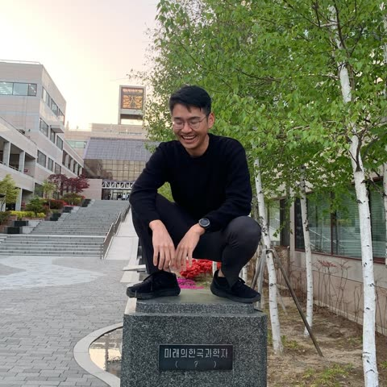

Joonho Lee
Group Leader, Neuromeka AI Lab · Advisor, RIVR
Robotics researcher and systems integrator with field experience. PhD from the Robotic Systems Lab at ETH Zurich on legged robotics; now leading AI research for industrial robots at Neuromeka.